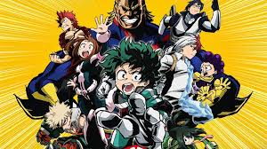
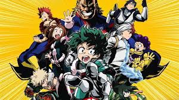

My name is John Chavez, I draw in my spare time and I like most anime. Anime is like a cartoon but it can be dubbed or subbed. I like to watch Dragon Ball Z and many more. I have a pet dog named Tobey, I like to play videogames on my Ps4. My favorite subject at school is computer science principles because it it something new that I wanted to try but i finally gained the courage and now i am making a website! I am a freshmen and I have pretty good grades like A's and B's I have never gotten a F. At my elementary I have gotten student of the moth every grade. I moved to Lancaster mid year in 8th. I was born in Inglewood and moved to Lancaster no more than a year ago. The best feeling about school is when i finished my Scratch project. I failed many times until i got it made me feel good, If you want to check it our it is my Portfolio just highlight the link and go there and check it out.
 
